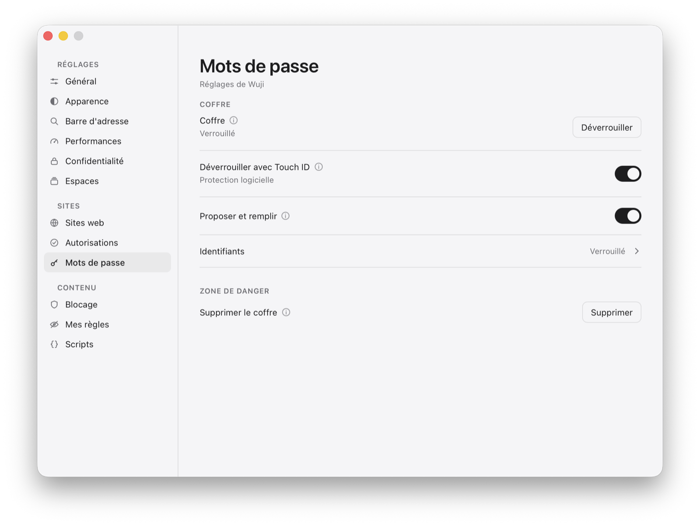

WujiMots de passe
Mots de passe
Les identifiants vont dans le coffre de Wuji, et nulle part ailleurs. Rien n'entre sans un oui, rien ne sort sans un geste.
Le coffre

Chiffré, et la clé ne touche pas le disque
Un fichier, coffre.json, chiffré en AES-256-GCM avec une clé dérivée du mot de passe maître par PBKDF2-HMAC-SHA512, 210 000 tours. La clé vit en mémoire et disparaît au verrouillage.
Un octet changé, un fichier refusé
GCM authentifie autant qu'il chiffre : un coffre modifié est refusé au lieu de rendre n'importe quoi.
Fermé au lancement
Il ne s'ouvre pas de force : sur une page de connexion, la complétion propose « Déverrouiller le coffre… », là où elle sert.
Refermé après la connexion
Ouvert au doigt pour se connecter, il se referme dès que le mot de passe est dans la page — ou au bout de deux minutes s'il n'a servi à rien. Ouvert depuis les réglages, il attend qu'on ait fini.
Refermé avec le Mac
Écran verrouillé, mise en veille, session passée à un autre compte : la clé quitte la mémoire, et Touch ID la rend au retour.
Ce qu'on perd, dit franchement
Pas de synchronisation iCloud ni de sauvegarde du trousseau. Et un mot de passe maître oublié est un coffre perdu : c'est ce que « chiffré » veut dire — d'où la double saisie à la création.
Touch ID
Un raccourci, pas un remplacement
Le coffre s'ouvre au doigt si on l'allume. Le mot de passe maître reste valable : ajouter une empreinte au Mac invalide la clé confiée, et sans lui le coffre deviendrait inouvrable.
Trente-deux octets, dans l'Enclave
Ce qui est confié à l'Enclave sécurisée est la clé du coffre, inutile sans le fichier. Jamais un identifiant, jamais un nom de site. Éteindre Touch ID efface la clé confiée.
La complétion
Sous le champ où l'on a cliqué
La liste des comptes connus pour ce site, filtrée à la frappe — casse et accents mis de côté. ↑ ↓ ↵ choisissent, échap referme.
Un choix ne remplit que ce champ
Choisir un compte dans le champ d'identifiant ne sort pas le mot de passe du coffre : il ne le quitte que lorsque c'est son champ qui a été désigné.
La page ne voit jamais la liste
Elle est dessinée par macOS, pas dans la page : un site ne peut ni la lire, ni compter vos comptes. Et elle ne porte que des noms.
Les connexions en deux étapes
Google, Microsoft et d'autres demandent l'adresse d'abord : le champ déclaré « username » suffit à proposer, et le remplissage écrit l'adresse seule.
Instantanée
Le coffre est déchiffré une fois et indexé par site : 0,2 µs par frappe sur deux mille identifiants.
Trois règles
L'hôte vient de WebKit, jamais de la page
C'est l'origine réelle du cadre qui parle : une page ne peut pas se faire passer pour votre banque et recevoir son identifiant.
Rien sans un oui
L'enregistrement est proposé, pas fait. Le remplissage n'est automatique que s'il n'y a rien à choisir ; à partir de deux comptes, c'est vous qui choisissez.
HTTPS, sauf chez soi
Un mot de passe n'est pas proposé en clair sur le réseau ; un service hébergé chez vous — localhost, .local, les réseaux privés — n'en traverse aucun.
Entrer et sortir
Importer
Aucun navigateur tiers ne peut lire l'app Mots de passe. Son export CSV — ou celui de Chrome, de Firefox, de Bitwarden, de 1Password — se lit dans Réglages › Mots de passe, et chaque ligne entre chiffrée. Combien entrent et combien sont écartées est dit avant d'écrire.
Exporter
Aux mêmes colonnes : ce qui sort d'ici se relit dans Safari, Chrome ou Firefox. Un export chiffré que seul Wuji relirait ne serait pas un export — il est en clair, et c'est dit. C'est pourquoi il redemande toujours Touch ID ou le mot de passe maître, même coffre ouvert, et que le fichier n'est lisible que par vous.
Copier sans passer par la page
Réglages › Mots de passe liste l'hôte et le compte, jamais le secret. « Copier » le met dans le presse-papiers sans qu'il transite par la page ; il ne quitte pas ce Mac, se déclare secret, et s'efface au bout de 90 secondes.
L'authentification HTTP
Un serveur qui demande qui vous êtes ouvre une bulle en bas à droite. Rien n'y est retenu : ce qui est tapé part au serveur et disparaît avec elle. Seul le site affiché peut la demander : une image d'un autre site ne s'invite pas par-dessus votre banque.